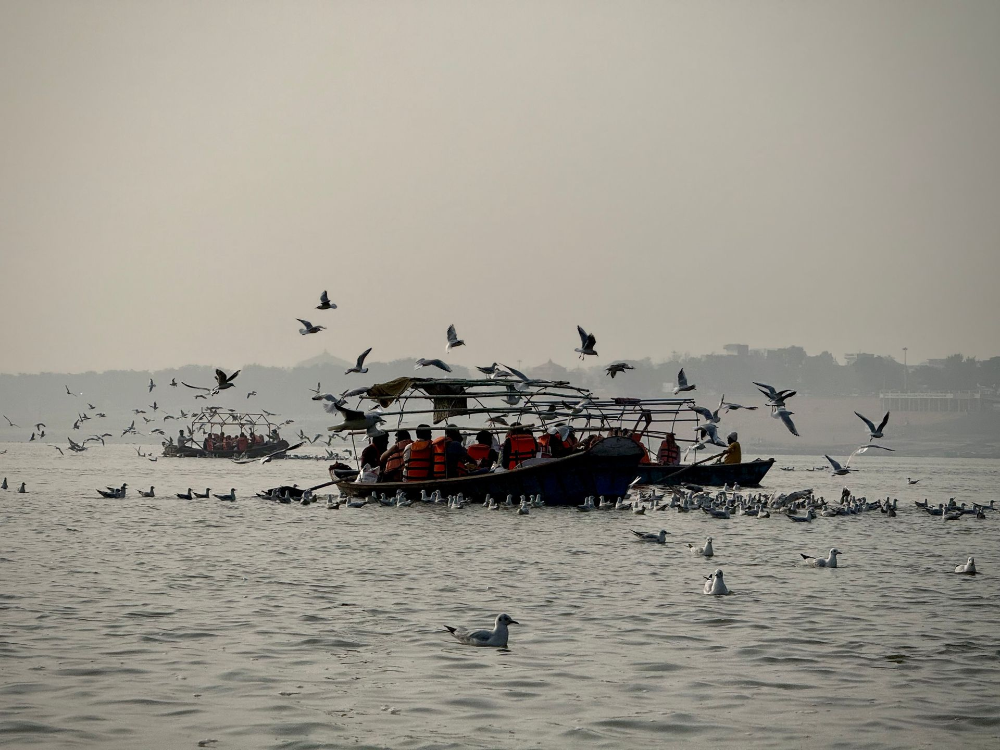

Featured Destination
Ram Rekha Ghat
Ganga riverfront · Buxar town
Where tradition says Rama drew a line across the river with his bow so the travellers could cross — and where, in fair season, the emptied riverbed turns into wrestler arenas beneath the evening aarti.
- Category
- Spiritual Site · Ghat
- Best Time
- Oct–Mar · Makar Sankranti & Chhath fairs